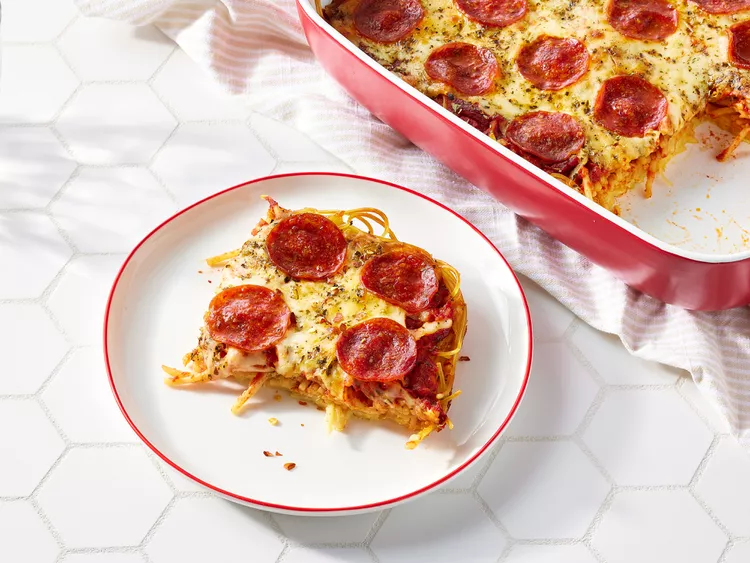

Spaghetti Pizza

Description
This baked spaghetti pizza is a fun combination of pasta and pizza ingredients. Quick, fun and hearty meal for you and your friends!
Ingredients
- cooking spray
- 1 (8 ounce) package spaghetti, broken into 2-inch pieces
- 1 tablespoon HP sauce
- 2 cups shredded mozzarella cheese, divided
- 1/4 cup milk
- 1 large egg, beaten
- 1/4 teaspoon salt
- 1/4 teaspoon garlic salt
- 1 (16 ounce) jar spaghetti sauce
- 1 teaspoon dried oregano
- 1/4 teaspoon dried basil
- 4 ounces pepperoni sausage, sliced
Steps
- Gather all ingredients.
- Preheat the oven to 425 degrees F (220 degrees C). Grease a 9x13-inch baking dish with cooking spray.
- Bring a large pot of lightly salted water to a boil. Cook spaghetti in the boiling water, stirring occasionally, until tender yet firm to the bite, 8 to 10 minutes. Drain and rinse with cold water.
- Mix 1/2 cup mozzarella, milk, egg, salt, and garlic salt together in a large bowl.
- Add drained spaghetti and mix until well combined. Spread mixture into the prepared baking dish. Bake in the preheated oven for 15 minutes. Remove from the oven and reduce the temperature to 350 degrees F (175 degrees C).
- Spread spaghetti sauce over noodle mixture. Sprinkle with oregano and basil, then top with remaining 1 1/2 cups mozzarella. Arrange pepperoni over cheese.
- Return to the oven and bake until cheese is bubbly and beginning to brown, about 30 minutes. Let stand for 5 minutes before cutting.
Home